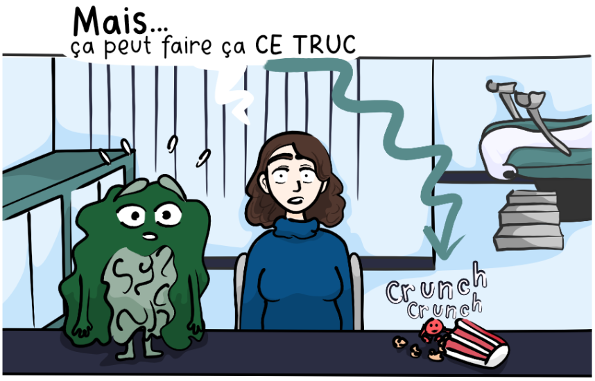
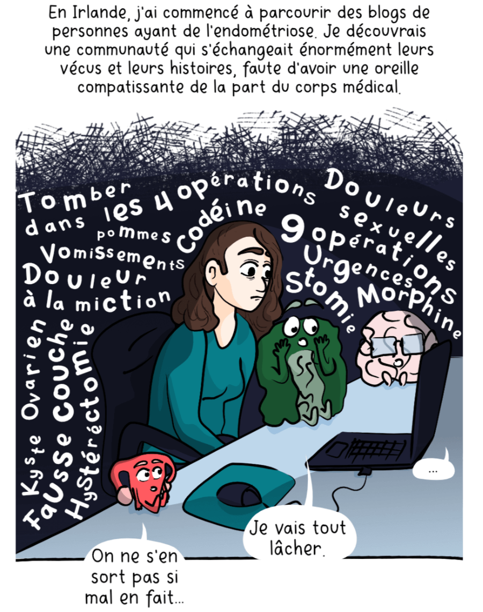
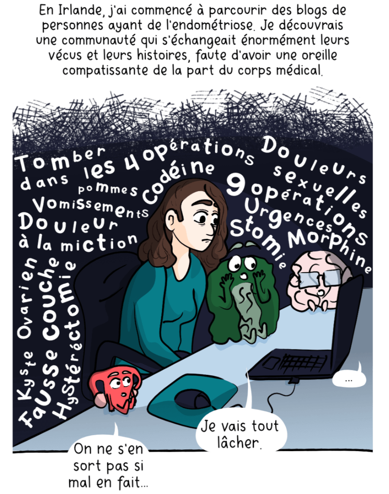

Endonymous est un blog créé pour diffuser un roman graphique que j'ai réalisé sur l'endométriose et mon parcours avec cette maladie chronique touchant une femme sur dix.
Le blog recense plusieurs articles sur l'endométriose permettant d'améliorer les connaissances sur cette maladie ainsi que des planches de bande-dessinée, le tout est accessible de manière gratuite.
L’endométriose et l'adénomyose sont des maladies de l’appareil reproducteur féminin. Il s'agit pour l'endométriose de cellules ressemblant à de l'endomètre qui vont se situer de manière anormale dans l'abdomen, sur l'utérus ou des organes environnants. Pour l'adénomyose, les lésions vont elles se situer de manière anormale dans le myomètre, qui est le muscle utérin. Maladie chronique en lien avec le cycle menstruel, un diagnostic d’endométriose peut prendre entre cinq et neuf ans. On ne guérit pas d’endométriose mais les traitements proposés peuvent permettre de diminuer voire d’éliminer les symptômes.

La majeure partie des blogs-BD ne sont pas adaptés à la lecture de celles-ci sur le net. À l'image des Webtoons, un nouveau format de bande-dessiné sur mobile, j'ai pensé le roman graphique Endonymous comme un média totalement nouveau. Avec des animations et une lecture en long, ce blog fait partie des rares médiums permettant de profiter d'une BD gratuite sur internet avec une expérience utilisateur pensée à la lecture de ce médium. Le site se veut à l'image du roman graphique, drôle mais sérieux, dédramatisant mais permettant de sensibiliser à la maladie. Il s'agit d'un outil ludique pour parler d'un sujet grave voir douloureux mais toujours avec une pointe d'humour et d'autodérision.
 

Endonymous est également une communauté Facebook, Twitter et Instagram de plus de 2000 abonnés, avec des contenus et des illustrations créés régulièrement pour faire vivre ces réseaux sociaux.